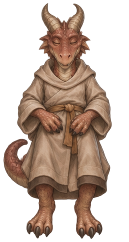

Kilnip en su hamaca
Kilnip duerme unos segundos durante su ronda diurna. Al terminar regresa a la casilla desde la que se acercó a la hamaca.
Vista desde la celda
Pulsa cada imagen para alternar la rutina anterior y el descanso tumbado con la misma cámara.
Desde el pasilloMostrando antes. Pulsa la imagen para superponer el después; vuelve a pulsar para regresar.
Desde el otro lado de la hamacaMostrando antes. Pulsa la imagen para superponer el después; vuelve a pulsar para regresar.
Respiración en reposo

Lámina original
Ocho fotogramas WebP sin pérdida, un 36 % menos de tamaño que los mismos recortes en PNG.
Pruebas y registro de originales